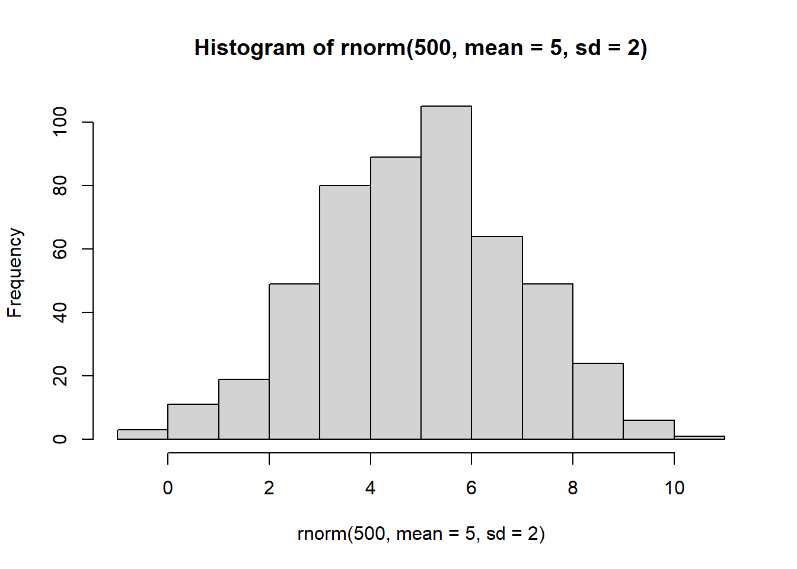
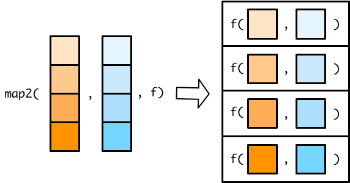

# installing tidyverse package
install.packages('tidyverse')Appendix B — A Primer on R
Learning Objectives of the Appendix
At the End of the Appendix, Students should be Able to -
Gain an Understanding about R
Gain an Understanding about the Data Types and Data Structures in R
Gain an Understanding about Indexing and Slicing of vectors and Data Frames, and Mathematical Operations on them
Gain an Understanding about
forLoop function,mapfunction, and User Defined Function, and Anonymous Function in R
B.1 What is R?
R is an object-oriented programming language. R was first developed by two statisticans - Ross Ihaka and Robert Gentleman1 - in early 1990s2. Though it was first designed for statistial purposes, nowadays, it is widely used in statistical analysis, visualization, finance, healthcare industry, and many more. Many companies in the world use R. For example, The Newyork Times and Airbnb use R for their day to day operations.
B.2 Packages in R
Packages are collections of functions, data and so on. Packages enhance the functionalities of R. There are tons of packages for different purposes in R. The Comprehensive R Archive Network (CRAN) - https://cran.r-project.org/- is the primary repository of R packages. Some of the widely used R packages include - dplyr, ggplot, lubridate, and shiny. The function - install.package('packagename')- is used to install a package in R. Once the package is installed, one needs to load (import) package by running the code - library (packagename)3. Please note that you need to install the package only once, but you need to import (load) your package each time you start a new R session.
# Loading tidyverse package
library(tidyverse)B.3 Data Types
Data4 has different types. When dealing with data, we need to know the types of the data because different data types can do different things. There are five basic data types in R. They include - double, integer, character, logical, and complex. We use typeof () or class () functions to know the types of the vector and length() to know the size of the vector. However, most commmonly used data types are double, integer, character, and logical.
B.4 Data Structure
There are several types of data structures in R. These structures include - vector, matrix, array, list, data frame, tibble, and facotrs. Of these data structures - vector, list, data frame and tibble are the most common.
B.4.1 Vector
Vector is one of the basic data structures in R. In most cases, vectors are created by using c() function, where “c” means concatenate. Sometimes vectors are classified into two groups - atomic vectors and lists. Figure B.1 shows the classfication of the vectors. Atomic vectors include - double, integer, character, and logical vectors5. The double and integer vectors are collectively known as numeric vectors. Lists include dataframe or tibble. Lists are called recursive vectors because they can include other lists. NULL6 is often used to represent the absence of a vector. NULL indicates that the vector length is 0.
# An example of a vector
students = c ("John", "Adam", "Alex", "Emily")
print(students)[1] "John" "Adam" "Alex" "Emily"typeof(students)[1] "character"class(students)[1] "character"length(students)[1] 4# Numeric vector
numeric_vector <- c(1.1, 2.2, 3.3)
# Integer vector
integer_vector <- c(1L, 2L, 3L)
# Character vector
character_vector <- c("a", "b", "c")
# Logical vector
logical_vector <- c(TRUE, FALSE, TRUE)# Some vector operations
numeric_vector + 5[1] 6.1 7.2 8.3numeric_vector - 5[1] -3.9 -2.8 -1.7max(numeric_vector)[1] 3.3min(integer_vector)[1] 1sum(integer_vector)[1] 6sd(numeric_vector)[1] 1.1# Vectors as sequence of Numbers
num_seq = 1:10
num_seq [1] 1 2 3 4 5 6 7 8 9 10seq(15) [1] 1 2 3 4 5 6 7 8 9 10 11 12 13 14 15seq(1,40, by = 2) [1] 1 3 5 7 9 11 13 15 17 19 21 23 25 27 29 31 33 35 37 39B.4.2 Matrix
Matrix is a special type of vector with dimensions, meaning that matrix has rows and columns. Matrix is constructed columnwise.
matrix(seq(1:12), nrow = 4, ncol = 3) [,1] [,2] [,3]
[1,] 1 5 9
[2,] 2 6 10
[3,] 3 7 11
[4,] 4 8 12m = 1:12
dim (m) = c(4,3) # dimension added to the matrix
m [,1] [,2] [,3]
[1,] 1 5 9
[2,] 2 6 10
[3,] 3 7 11
[4,] 4 8 12B.4.3 Arrays
Arrays are very similar to matrix, but they have more than two dimensions.
array(1:27, dim = c(3,3,3)), , 1
[,1] [,2] [,3]
[1,] 1 4 7
[2,] 2 5 8
[3,] 3 6 9
, , 2
[,1] [,2] [,3]
[1,] 10 13 16
[2,] 11 14 17
[3,] 12 15 18
, , 3
[,1] [,2] [,3]
[1,] 19 22 25
[2,] 20 23 26
[3,] 21 24 27B.4.4 Data Frames (tibble)
Like matrix, data frames are two dimensional, having rows and columns. However, unlike matrix, they can contain different types of data. Data frames are widely used in data analytics. Tibble is an updated or modern type of data frame. It is recommended to use tibble.
data.frame(
id = 1:3,
name = c ('A', "B", "C"),
age = c (18, 21, 23)
) id name age
1 1 A 18
2 2 B 21
3 3 C 23tibble(
id = 1:3,
name = c ('A', "B", "C"),
age = c (18, 21, 23)
)# A tibble: 3 × 3
id name age
<int> <chr> <dbl>
1 1 A 18
2 2 B 21
3 3 C 23B.4.5 Lists
Lists are very versatile in that it can contain different types of data. Unlike atomic vectors, which contain same type of data, lists can contain many types of data. Lists can also contain another list; therefore, it is sometimes called recursive vector. List is created by using function list().
list_example = list (
name = "Jessica",
age = c(22),
cgpa = c(3.75),
student = TRUE,
address = list(
street = c("5 W Main St"),
city = c("Carbondale"),
zip = 62901
),
hobbies = c ("Fishing", "Hiking", "Cooking")
)
list_example$name
[1] "Jessica"
$age
[1] 22
$cgpa
[1] 3.75
$student
[1] TRUE
$address
$address$street
[1] "5 W Main St"
$address$city
[1] "Carbondale"
$address$zip
[1] 62901
$hobbies
[1] "Fishing" "Hiking" "Cooking"print(list_example$name)[1] "Jessica"print(list_example$address$city) # nested list element[1] "Carbondale"list_example[1]$name
[1] "Jessica"list_example[[1]][1] "Jessica"list_example[c(1,2)]$name
[1] "Jessica"
$age
[1] 22B.5 Indexing and Slicing Vectors
Using [], one can access elements in a vector. Unlike python7, R uses 1 based indexing, meaning that first element has an index 1. For slicing, one can specify the range of index using :.
sample_vector = c (10:25)
sample_vector[5][1] 14sample_vector[5:6][1] 14 15sample_vector[c(5,8)][1] 14 17Negative indexing, unlike python, excludes the element from the vector.
sample_vector[-5] [1] 10 11 12 13 15 16 17 18 19 20 21 22 23 24 25sample_vector[-c(5,8)] [1] 10 11 12 13 15 16 18 19 20 21 22 23 24 25Conditional or logical indexing can be done on the vector as well.
sample_vector > 13 [1] FALSE FALSE FALSE FALSE TRUE TRUE TRUE TRUE TRUE TRUE TRUE TRUE
[13] TRUE TRUE TRUE TRUEsample_vector[sample_vector>13] [1] 14 15 16 17 18 19 20 21 22 23 24 25Additionally, different kinds of mathematical operatins can be applied on the vector.
min(sample_vector)[1] 10max(sample_vector)[1] 25sum(sample_vector)[1] 280sd(sample_vector)[1] 4.760952range(sample_vector)[1] 10 25mean(sample_vector)[1] 17.5 For data frame or tibble, one can use [row,column] for indexing or slicing.
df = data.frame(
id = 1:3,
name = c ('A', "B", "C"),
age = c (18, 21, 23)
)
df['age'] age
1 18
2 21
3 23df$age[1] 18 21 23df$age[1][1] 18df['age'][[1]][1][1] 18df[,] id name age
1 1 A 18
2 2 B 21
3 3 C 23df[1,'age'][1] 18df[1:2,'age'][1] 18 21df[1:2,c('age','id')] age id
1 18 1
2 21 2df2 = tibble(
id = 1:3,
name = c ('A', "B", "C"),
age = c (18, 21, 23)
)
df2['age']# A tibble: 3 × 1
age
<dbl>
1 18
2 21
3 23df2$age[1] 18 21 23df2$age[1][1] 18df2['age'][[1]][1][1] 18df2[,]# A tibble: 3 × 3
id name age
<int> <chr> <dbl>
1 1 A 18
2 2 B 21
3 3 C 23df2[1,'age']# A tibble: 1 × 1
age
<dbl>
1 18df2[1:2,'age']# A tibble: 2 × 1
age
<dbl>
1 18
2 21df2[1:2,c('age','id')]# A tibble: 2 × 2
age id
<dbl> <int>
1 18 1
2 21 2B.6 Random Numbers
In R, two widely used functions to generate random numbers are - runif() and rnorm(). runif() is used to generate random numbers from uniform distribution. The range of numbers generated using runif is 0 to 1.
# vector of 2 elements
runif(2)[1] 0.815210 0.755775# vector of 5 elements from 0 to 100
runif(5, min = 0, max = 100)[1] 30.71386 76.42196 46.04158 91.71796 75.95709 rnorm() function generates random numbers from normal distribution with mean 0 and standard deviation 1.
rnorm(5)[1] -0.3574968 2.0226868 0.0799028 -0.1237044 1.0191988rnorm(5, mean = 5, sd= 2)[1] 4.288356 3.432533 5.121723 4.919424 7.026098mean(rnorm(500, mean = 5, sd= 2))[1] 4.954725sd(rnorm(500, mean = 5, sd= 2))[1] 1.871907hist(rnorm(500, mean = 5, sd= 2))
Using rnorm(), we can create matrix and convert it into data frame or tibble.
mat = matrix(rnorm(50), ncol = 5)
colnames(mat) = c("a", "b", "c", "d", "e")
as_tibble(mat)# A tibble: 10 × 5
a b c d e
<dbl> <dbl> <dbl> <dbl> <dbl>
1 1.50 -0.227 0.502 0.465 -0.113
2 -1.37 1.33 0.00388 0.172 -0.982
3 0.421 -0.654 0.0897 -0.242 0.685
4 -1.67 -1.02 -0.160 -0.805 0.183
5 0.330 0.546 0.864 1.57 -0.732
6 -1.53 -0.256 -2.93 -0.507 -1.25
7 -0.392 0.869 0.0148 -0.203 -0.728
8 -0.563 -0.762 0.295 0.778 0.940
9 0.758 0.946 -1.77 -1.37 -1.06
10 -0.714 1.07 1.32 -1.29 0.0165 In additon to runif() and rnorm(), sample() function can be used to generate random numbers.
sample(0:100,5)[1] 100 30 32 22 87sample(0:100,5, replace = TRUE)[1] 43 55 54 81 90matrix(sample(0:50,50), ncol = 5) [,1] [,2] [,3] [,4] [,5]
[1,] 8 20 43 3 46
[2,] 19 28 29 17 18
[3,] 16 13 22 39 12
[4,] 48 44 31 38 26
[5,] 33 37 40 1 23
[6,] 30 32 49 0 5
[7,] 34 35 21 10 14
[8,] 27 45 50 41 15
[9,] 42 7 24 11 36
[10,] 4 2 47 9 25B.7 Functions
In R, there are some functions that we use very frequently. In this section, we will discuss some of those functions.
B.7.1 for Loop Function
for loop function in R is used to iterate over8 the elements of a vector, or a list, or a matrix, or a data frame, or a tibble and apply a set of instructions (operations) on each item of the object. for loop function is used to avoid unnecessary repeition of code, thus enhancing efficiency and effectiveness of code. The basic syntax of for loop function in R -
for (item in object) {
Statement
} Some examples of for loop function are -
for (x in seq(1:5)) {
print(x^2)
}[1] 1
[1] 4
[1] 9
[1] 16
[1] 25for (x in c('Adam', "Joseph", "John")) {
print(x)
}[1] "Adam"
[1] "Joseph"
[1] "John"# Vectors for numbers and names
numbers <- 1:3
names <- c('Adam', 'Joseph', 'John')
# Loop through the vectors and print the desired output
for (i in 1:length(numbers)) {
print(paste(numbers[i], names[i], sep = ", "))
}[1] "1, Adam"
[1] "2, Joseph"
[1] "3, John"B.7.2 map() Function
In map() function, the purpose is to apply a function on a vector or list, meaning that map() functions take a list/vector and a function as arguments. Figure B.2 sows the nature of map() function. The map() function then applies the function to each element of the list/vector and the result of this process is then combined into a list. For example, a list called sample_list is created. The length() function can be used to know the elements of the list. However, if you want to the element of each list, then map() function can be used. The other variation of map() functions that the package purrr include - map_int(), map_dbl(), map_chr(), and map_lgl()9.

sample_list <-
list(
x = 1737.1,
y = c(11.3, 6.2),
z = c(60.4, 81.4, 156, 174.8, 194, 34.8, 420, 2705.2, 340, 62)
)
sample_list$x
[1] 1737.1
$y
[1] 11.3 6.2
$z
[1] 60.4 81.4 156.0 174.8 194.0 34.8 420.0 2705.2 340.0 62.0length(sample_list)[1] 3map(sample_list, length)$x
[1] 1
$y
[1] 2
$z
[1] 10B.7.2.1 map() Functions with Multiple Inputs
The map2() functions are very similar to the map() functions, but they take two input vectors instead of one. Since the map2() functions iterate along the two vectors in parallel, they need to be of the same length. Figure B.3 shows a map2() function.

x <- c(1, 2, 4)
y <- c(6, 5, 3)
map2_dbl(x, y, min)[1] 1 2 3df <-
tibble(
a = c(1, 2, 4),
b = c(6, 5, 3)
)
df %>%
mutate(min = map2_dbl(a, b, min))# A tibble: 3 × 3
a b min
<dbl> <dbl> <dbl>
1 1 6 1
2 2 5 2
3 4 3 3df %>%
mutate(
min = min(a,b)
)# A tibble: 3 × 3
a b min
<dbl> <dbl> <dbl>
1 1 6 1
2 2 5 1
3 4 3 1 By default mutate(), uses column-wise operations. map2_dbl() produces a column the same length at a and b. We can accomplish the same calculation using row-wise operations.
df %>%
rowwise() %>%
mutate(min = min(a, b)) %>%
ungroup()# A tibble: 3 × 3
a b min
<dbl> <dbl> <dbl>
1 1 6 1
2 2 5 2
3 4 3 3B.7.2.2 pmap() Functions
There are no map3() or map4() functions. Instead, you can use a pmap() (p for parallel) function to map over more than two vectors. The pmap() functions work slightly differently than the map() and map2() functions. In map() and map2() functions, you specify the vector(s) to supply to the function. In pmap() functions, you specify a single list that contains all the vectors (or lists) that you want to supply to your function. Figure B.4 shows a pmap() function.

Flipping the list diagram makes it easier to see that pmap() is basically just a generalized version of map2() (See Figure B.5).

The only difference is that map2() lets you specify each vector as a separate argument. In pmap(), you have to store all your input vectors in a single list. This functionality allows pmap() to handle any number of input vectors.
x <- c(1, 2, 4)
y <- c(6, 5, 3)
map2_dbl(x, y, min)[1] 1 2 3pmap_dbl(list(x, y), min)[1] 1 2 3z <- c(100, 15, 1)
pmap_dbl(list(x, y, z), max)[1] 100 15 4B.7.3 User Defined Functions
User defined functions are also called named functions because they are assigned a name and expected to be called frequently. The goal of user defined functions is to optimize program, avoid or minimize the reptition of the code, prevent errors, and make the code more readable. In R, to declare a user defined function, we use the keywoard function(). The syntax of user defined function is given below. It is clear that there are three components of an R function - function name, function parameters (arguments), and function body (expression). We can drop curly braces ({}) from the function if the function body contains a single statement. Moreover, the function must be called with the correct number of arguments.
functionname = function (arguments) {
function body
}Below are examples of some user defined functions.
add_numbers = function (x,y){
sum = x + y
return(sum)
}
add_numbers(5,-25)[1] -20greetings = function (name, greeting = "Welcome", sign = "!"){
greetingtogether = paste(name, sign, sep = "")
print(paste(greeting, greetingtogether))
}
greetings("Nicole")[1] "Welcome Nicole!"B.7.4 Anonymous Functions
Anonymous functions are functions that are not named, meaning that unlike normal functions, they do not have any name. Anonymous functions are useful when we do not plan to use them again and again. In most cases, we use anonymous function as an argument to other functions. In R, the synax of anonymous function is very much similar to named function. The syntax of anonymous function is - function (x) expression.
vec = c (1,5,6)
sapply(vec, function(x) x^2)[1] 1 25 36 Sometimes, using purrr, we can create anonymous function by one sided formula. In the below example, ~.x**2 works like function (x) x**2.
map_int(1:5, ~.x**2)[1] 1 4 9 16 25B.8 Conclusions
Exercises
R got its name from the first letters of its creators. Both of their names start with letter R.↩︎
1996 is the year when R was introduced.↩︎
Please note that in
install.package(), you need to use quote (either single or double), but inlibrary(), you do not need to use quote.↩︎The word “data” sometimes is considered plural because there is a singular word for “data”, which is “datum”. In this book, both words are used interchangeably. Therefore, the word “data” is used as both singular and plural.↩︎
The other two atomic vectors include - complex and raw.↩︎
As opposed to
NULL,NArefers to the absence of value.↩︎Python uses 0 based indexing.↩︎
Iteration (also called looping) is the process of repeating the same operation on different columns, or on different datasets. There are two important iteration paradigms:
imperative programmingandfunctional programming. On the imperative side, one has tools likefor ()loops andwhile ()loops, which are a great place to start because they make iteration very explicit, so it is obvious what is happening. However,for ()loops are quite verbose, and require quite a bit of bookkeeping code that is duplicated for every for loop. One the other handFunctional programming (FP)offers tools to extract out this dupli cated code, so each commonforloop pattern gets its own function. Once one masters the vocabulary of FP, one can solve many common iteration problems with less code, more ease, and fewer errors. Theapply ()family functions in base R are equivalent tofor ()loop. Theapply ()family functions include the following functions for looping-apply ();lapply ();sapply (),tapply (),vapply (), andmapply (). Thepurrrpackage in tidyverse offersmap ()family functions for functional programming, which we will be using for the loop operations.↩︎The output of
map()function is always list. These variations help to get the desired output. To learn more about map functions, please visit - https://adv-r.hadley.nz/functionals.html.↩︎